Semantics
Disclaimer: The information presented in this chapter is by no means necessary for learners of the language.
The central goal of the formal semantics outlined here is to compositionally derive the logical meaning of any Toaq utterance directly from its syntactic parse tree.
Being designed to be a loglang, there must be an unambiguous mapping from every Toaq utterance to its logical form and by extension, its meaning.
This chapter attempts to show how this is accomplished.
Types and variables
Basic types and variables
| Type | Variables | |
|---|---|---|
| individuals | e | a, b, c, ..., ráı, ... |
| truth-values | t | |
| events | v | e, e', e'', ... |
| time intervals | i | t, t', t'', ... |
| worlds | s | w, w', w'', ... |
Complex types (selection)
| Type | ||
|---|---|---|
| Vintrans, Vtrans | <e,<v,t>> | |
| Vditrans | <e,<e,<v,t>>> | |
| Q | <<e,t>,<<e,t>,t>> | |
| &(róı) | <e,<e,e>> | |
| Asp | <<v,t>,<i,t>> | |
| T | <i,t> | |
| Propositions | <s,t> | |
| Properties | <e,t> or <s,<e,t>> |
Tree notation conventions
Tree notation
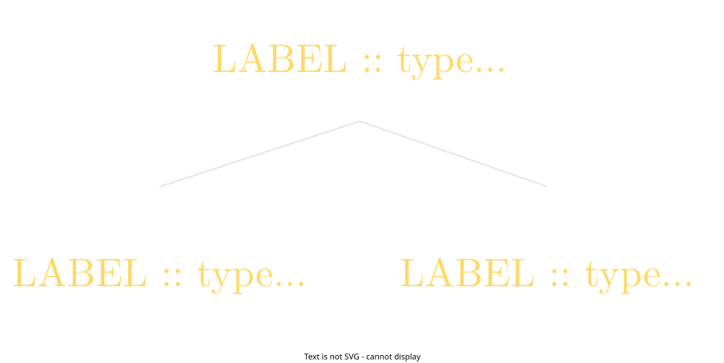gold = node labels and types
:: separates label from type, e.g. DP :: e
Semantic denotations are colored red, e.g. λx. hao(x).
Toaq words and phrases are light blue like everywhere else.
Composition rules
This section lists the different composition rules which are used in the process of computing the denotations of Toaq sentences.
Functional Application (FA)
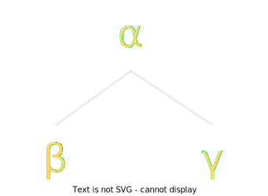If β is a head and γ its complement, then
α = β(γ)
Functional Application is the most common composition rule. It applies to the following head classes:
V, D, Asp, T, Modal(P), Σ, &, SA, Q, C
Predicate Modification (PM)
If β or γ is an adjunct, then
α = λx. β(x) ∧ γ(x)
Predicate Modification applies to:
CPrel, AdjunctP, aP
Predicate Abstraction (PA)
If β is a QP or FocusAdvP with the index i, then
βi γg = β(λx. γg[x/i])
g[x/i] is that variable assignment which is identical to g except that every constituent with the index i is replaced by x.
Predicate Abstraction applies to:
QP, FocusAdvP
Event Identification (EI)
If β is a non-vacuous v head and γ is a VP, then
α = λx.λe. β(x)(e) ∧ γ(e)
Event Identification applies to:
v
Variables and pronouns
The denotation of an expression which contains variables depends on what value each variable has. This is determined by an assignment function g, which assigns a unique value to each variable.
The meaning of likes(x, y) is different for the assignments
g1 = {x → Mary, y → John}, and
g2 = {x → Mary, y → Susan}.
We therefore write αg to indicate that we compute the denotation of α relative to an assignment g. We say that g2(y) = Susan. The examples in this chapter involve numeric variables (indices), so you will see things like g(7). The numbers are arbitrary and hold no significance.
Similarly, things should be evaluated relative to a specific context. For example, the pronoun jí refers to different speakers in different contexts. We therefore write a superscript c to indicate that the meaning of an expression is evaluated relative to a context c.
Taken together, this results in αg,c = β "the denotation of α relative to a variable assignment g and a context c is β".
Personal pronoun denotations
The personal pronouns follow this pattern:
jíg,c = the speaker in c
súqg,c = the listener in c
úmog,c = the speaker in c + the listener in c
...
Anaphoric pronouns and bound variables
For any other DP, the denotation is as follows:
If a DP α is an anaphoric pronoun or a bound variable, g is a variable assignment, and i is the DP's index, then
αig = g(i)
For example:
kúne5g = g(5)
See also: determiner phrase denotation
Verb phrases
VP denotation
The verb composes with its internal argument to form a VP.
The internal argument satisfies the object place, leaving the VP with one open event place.
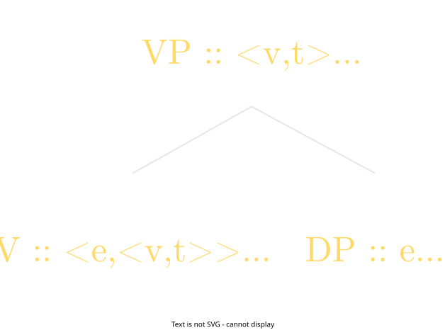
V = λx.λe. V(x)(e)
VP = V(<object>)
= [λx.λe. V(x)(e)](<object>)
= λe. V(<object>)(e)
For example:
gaı súq
= gaı(súq)
= [λx.λe. gaı(x)(e)](súq)
= λe. gaı(súq)(e)
= λe. e is an event of perceiving the listener
Intransitive verbs
The subject of an unaccusative verb merges as the complement of the verb, where it receives theme or experiencer.
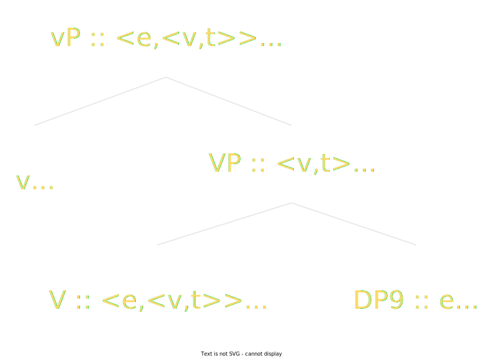
V(DP)
= [λx.λe. shua(x)(e)](g(9))
= λe. shua(g(9))(e)
= λe. e is an event of g(9) falling, defined only if g(9) is rain
The subject of an unergative verbs originates in Spec,vP, where it receives its agent role (via Event Identification):
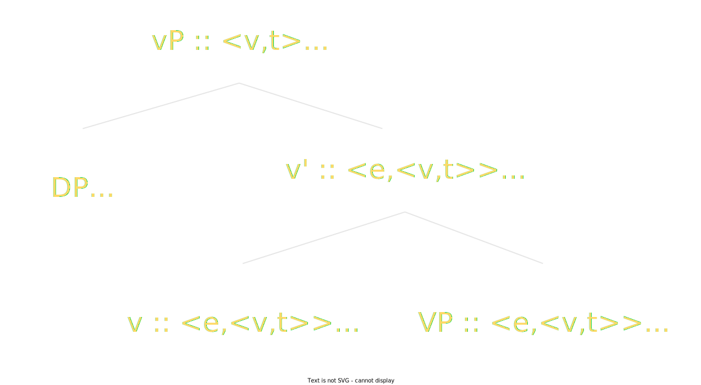
v(VP)
= [λx.λe. agent(e) = x](λx.λe. shua(x)(e))
= λx.λe. saqsu(e) ∧ agent(e) = x
[λx.λe. saqsu(e) ∧ agent(e) = x](jí)
= λe. saqsu(e) ∧ agent(e) = jí
= λe. e is an event of the speaker whispering
Transitive and ditransitive verbs
Transitives and ditransitives have an external agent argument which originates in Spec,vP. It receives its role from the v head. v combines with its sister via Event Identification:
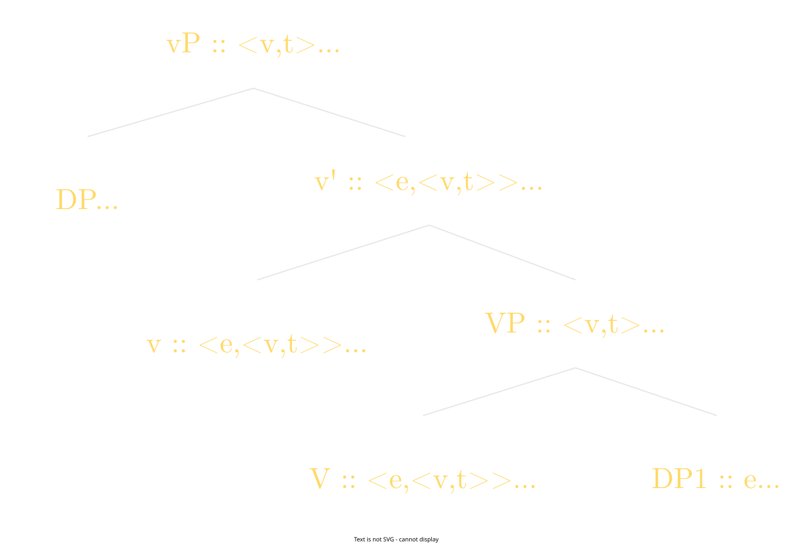
λe. buja(g(1))(e) ∧ agent(e) = súq
= λe. e is an event of kissing g(1) ∧ the listener is the agent of e,
defined only if g(1) is an equine
With ditransitive verbs, the indirect object precedes the direct object:
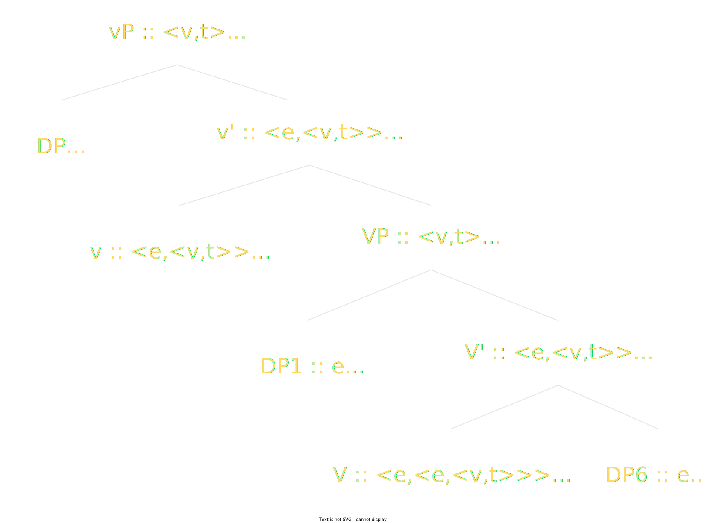
λe. do(súq, g(6))(e) ∧ agent(e) = jí
= λe. e is an event of giving g(6) to the listener ∧ the speaker is the agent of e,
defined only if g(6) is a book
Cleft verb
Cleft verb denotation
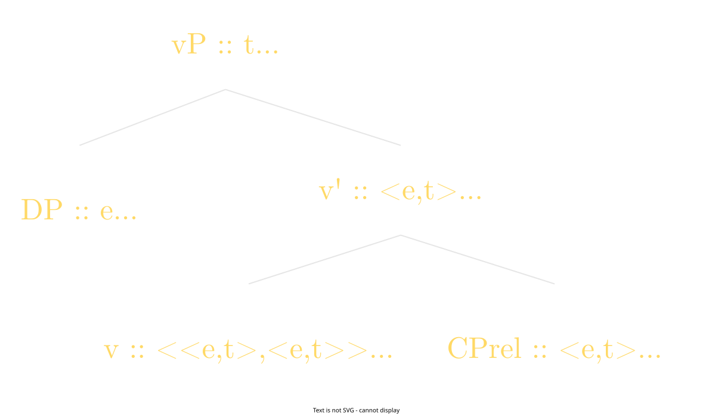The cleft verb nä allows a single argument to be fronted. This argument must appear in the complement of nä.
nä is used purely for manipulating word order. It does not add any semantic content.
Event accessor verb
Event accessor denotation
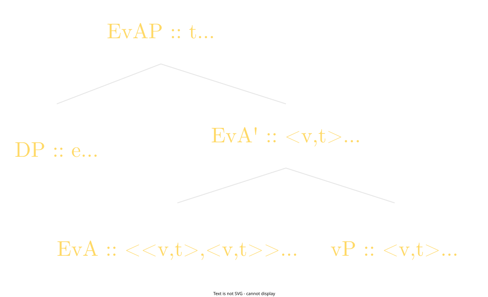The event accessor ë turns the event argument of a vP into a surface argument in order to make it accessible for surface arguments or to serve as the complement of a determiner.
márao "the one who dances"
é marao "the event of dancing"
Predicatizers
Predicatizer denotation
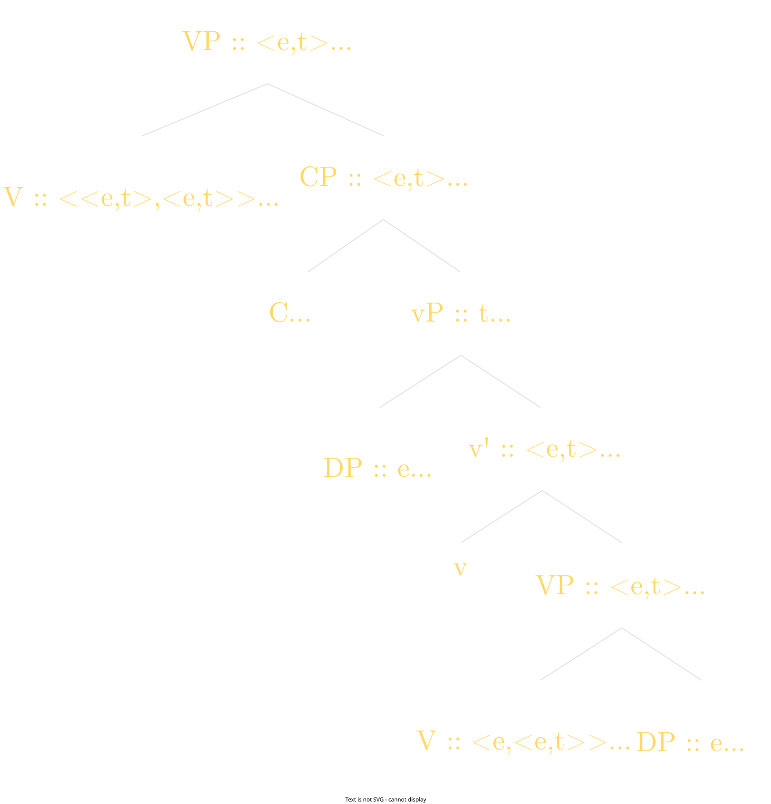Predicatizers are quantificationally opaque: if the complement is a quantified DP, the DP is QP-bound locally rather than by a QP in the clause that contains the predicatizer. To properly model this behavior, we posit the presence of a CP, which acts as a scope boundary.
The above example has a referring expression (jí "the speaker") as the complement. The following example features a quantified DP.
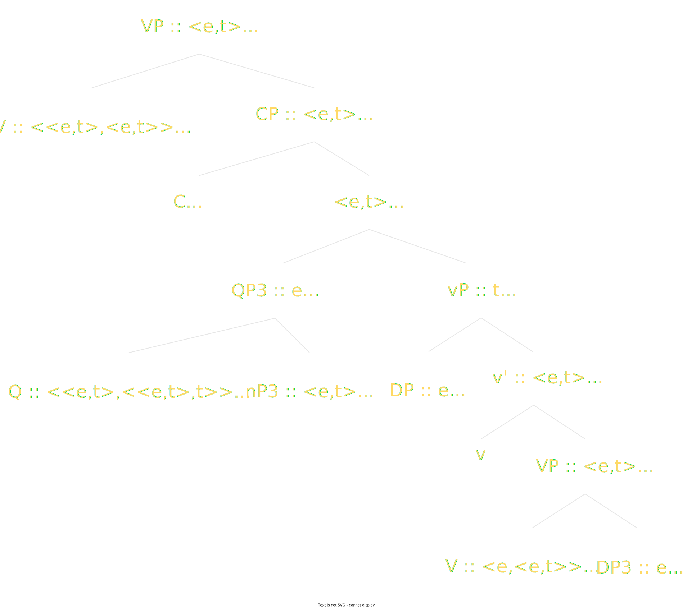This example shows how sá paı takes local scope, yielding:
λxi. ∃x : paı(x). hao(xi, x)
, which means
"X is such that there exists a friend with which X is related via the salient relation",
for the phrase po sá paı.
Determiner phrases
Determiner phrase denotation
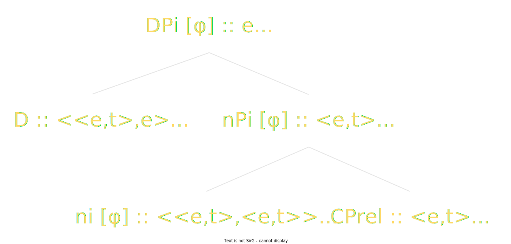Determiner phrases are complex structures of type e. They are composed of a determiner (D) followed by an nP. The nP consists of an unprounced n head, which contains a phi feature (animacy) and an index. Both are passed up the tree to give the projected DP an index and a phi feature.
The phi feature is presuppositional:
ni = λP: φ(g(i)). P, i.e., the function returns P if g(i) has the feature φ, and is undefined otherwise.
There is only one denotation for every determiner, or put another way, there is only one determiner in Toaq: bound-the.
D nPi = λP: P(g(i)). g(i)
This again contains a presupposition: if g(i) satisfies the predicate P, then the function returns g(i), otherwise it is undefined. This ensures that the main semantic content (in CPrel) makes a contribution, while the denotation of the DP is just a variable.
For example, the DP tú poq
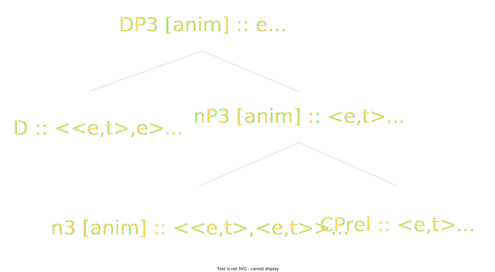has the denotation g(3), is presupposed to satisfy λx.poq(x), and is animate.
The nP also moves and merges with a higher Q head, which is where the DP variable actually gets bound (see below).
Quantifier phrases
Quantified DPs have the same denotation as unquantified DPs. This is because the actual quantificational force stems from a syntactically higher quantifier phrase (QP), while all DPs are merely bound variables.
Q heads are phonologically null. The presence and value of a Q head is observable via its morphological exponent D(eterminer), the head of the DP it binds. For example, an existential quantifier binds a (definite) DP headed by sá, and a universal quantifier binds a DP headed by tú. In other words, all determiners are allomorphs of the bound variable determiner  .
.
Quantifier scope pattern
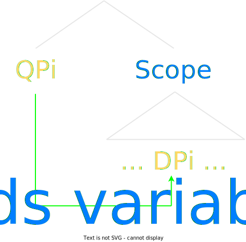Every quantifier phrase (QP) binds a DP in its scope.
The scope of a QP is its sister.
QP pattern
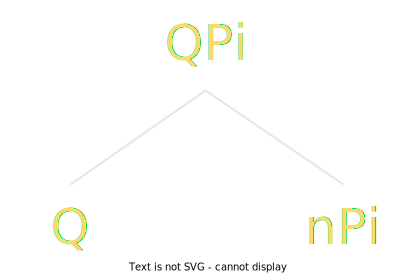A quantifier phrase (QP) is a quantifier followed by an nP.
The nP originates in a DP, from where it moves to the complement of Q to restricts the quantifier. The nP carries an index, which is passed to the QP.
Every QP binds a DP with the same index.
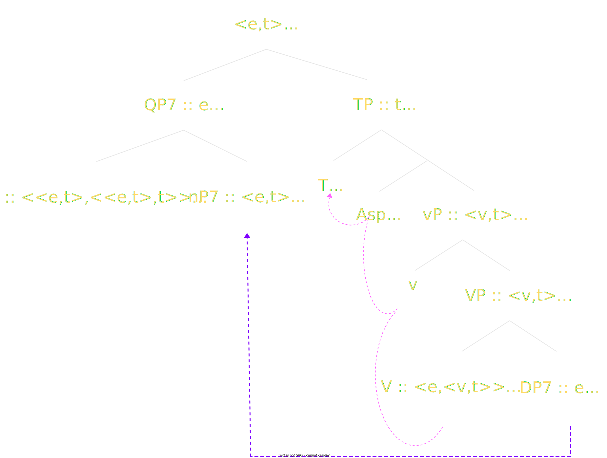Here, the nP ruq moves out of the DP and into the complement of Q to restrict the quantifier ∃, and to provide the QP with an index.
Quantifiers are of type <<e,t>,<<e,t>,t>>, meaning they take two one-place predicates as arguments. The first predicate (the nP) acts as a restriction on the domain of the quantifier. The second predicate is the scope of the quantifier.
A QP combines with its sister via Predicate Abstraction.
QP7 TPg,c
=
QP7(λx. TPg[x/7])
=
[λS. ∃x : ruq(x). S(x)](λx. TPg[x/7])
=
[λS. ∃x : ruq(x). S(x)](λx. ∃e. shua(x)(e))
=
∃x : ruq(x). ∃e. shua(x)(e)
= There exist(s) some x such that x is rain, such that there exists an event e of x falling.
Intensions and propositions
As they are written, the examples elsewhere in this chapter are purely extensional. This was done in order to keep the trees and the various type annotations as simple and small as possible. In reality, every verb has a world variable, and this results in many types growing a world place. Where this is not written explicitly, it is implied.
Verb denotations actually have the following form:
nuog,c,w = λx.λe.λw. nuow(x)(e)
which has the type <e,<v,<s,t>>>
For better readability and to separate it from all the other variables, the world variable appears as a subscript. When evaluating an expression, a superscript w indicates that the expression is evaluated relative to a (possible) world:
αw is the extension of α at world w and
λw. αw is the intension of α.
λw. jaraw(jí) is a function (of type <s,t>) which returns true iff the speaker runs in world w.
This is what propositions are, which, in Toaq, are complementizer phrases headed by ꝡä. Proposition-taking verbs, such as chı "to believe", take intensions as complements:
Propositional verbs
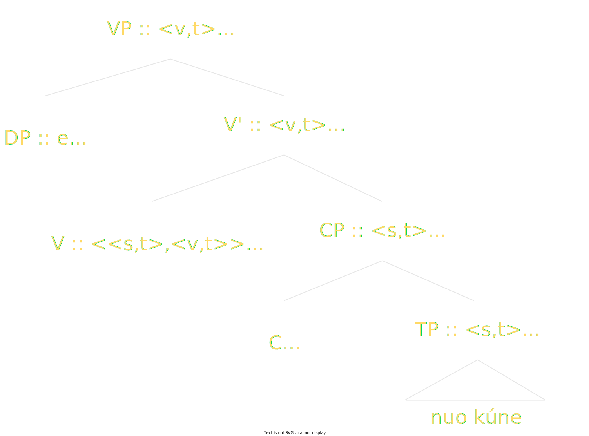The denotation of the CP ꝡä nuo kúne "that the dog is asleep" is
λw. ∃e'. nuow(kúne)(e'), i.e.,
a function which returns True if there is an event of the dog being asleep in w (at time t, ...).
This CP combines with the verb via Intensional Functional Application:
If β is an intension-taking function, and γ is an intensional complement, then, for any possible world w:
αw = βw(λw'. γw')
What the verb does with the proposition depends on the definition of the verb. For chı, we can say that
chı(jí, {λw. ∃e'. nuow(kúne)(e')}) expresses that
"Every possible world w which is compatible with the beliefs of the speaker is one in which the dog is asleep at time t", or in short, "The speaker believes that the dog is asleep."
Adjuncts
There are two kinds of adjuncts in Toaq: Adverbial adjuncts (AdjunctP) and relative clauses (CPrel). Both compose via predicate modification.
Adjunct phrases
Adverbial adjunct denotation
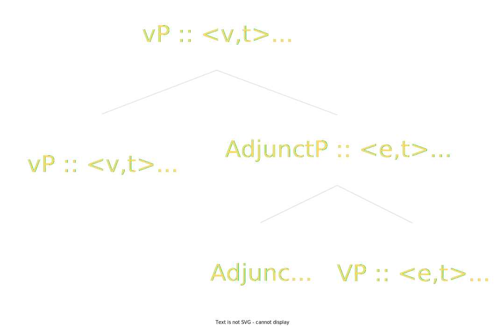Adverbials are adjuncts to vPs. They combine with their sister via Predicate Modification. They act as restrictions on the event variable of the vP.
[vP [vP] [AdjunctP Adjunct VP]]g,c
= λx. vP(x) ∧ AdjunctP(x)
= λx. nuokuaı súq(x) ∧ bîe jóafao(x)
= λx. [λe. nuokuaı(súq)(e)](x) ∧ [λx. bıe(x, jóafao)](x)
= λe. nuokuaı(súq)(e) ∧ bıe(e, jóafao)
= λe. e is an event of the listener being tired ∧ e is after the weekend
Relative clauses
Relative clause denotation
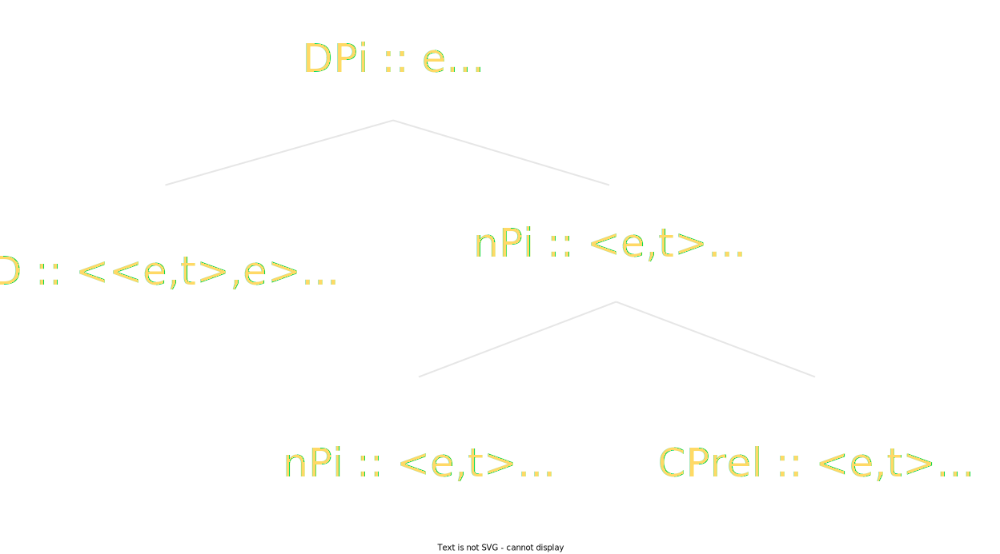Relative clauses are adjuncts to nPs. They combine with their sister via Predicate Modification:
[nP [nP CPrel]]g,c
= λx. nP(x) ∧ CPrel(x)
= λx. poq(x) ∧ ꝡë kaqgaı jí hóa(x)
= λx. [λx. poq(x)](x) ∧ [λx. kaqgaı(jí, x)](x)
= λx. poq(x) ∧ kaqgaı(jí, x)
= λx. x is a person ∧ the speaker sees x
Polarity phrases
Negation
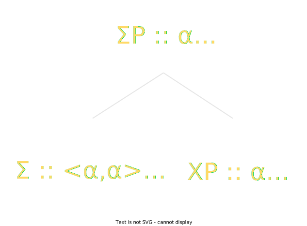Polarity (Σ) is a flexible category which can attach to many kinds of phrases. The type-agnostic definitions are:
bu = λP. ¬P
jeo = λP. †P
Aspect and Tense
Aspect and Tense
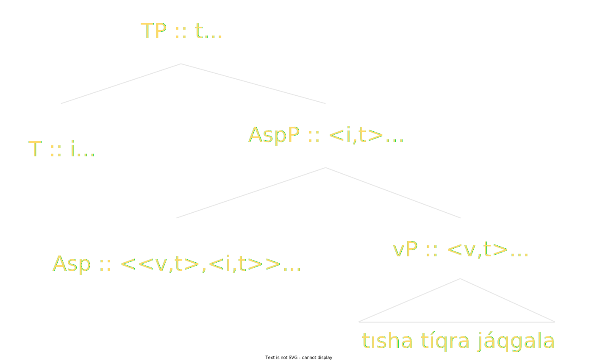Tense and aspect work together. Aspect acts on the vP first, and deals with the vP's event variable by relating it to a time interval. This interval is then supplied by a tense.
Aspect denotations
| Aspect | Denotation |
|---|---|
| tam | λP. λt. ∃e. τ(e) ⊆ t ∧ P(e) |
| chum | λP. λt. ∀w' ∈ IW(w,t'). ∃e. t ⊆ τ(e) ∧ Pw'(e) |
| luı | λP. λt. ∃e. τ(e) < t ∧ P(e) |
| za | λP. λt. ∃e. τ(e) > t ∧ P(e) |
| hoaı | λP. λt. ∃e. t ⊆ τ(e) ∧ t > ExpEnd(e) ∧ P(e) |
| haı | λP. λt. ∃e. t ⊆ τ(e) ∧ t < ExpStart(e) ∧ P(e) |
| hıq | λP. λt. ∃e. τ(e) <near t ∧ P(e) |
| fı | λP. λt. ∃e. τ(e) >near t ∧ P(e) |
Symbols:
< : the "before" relation: a time inverval t is before a time interval t' if every moment in t temporally precedes every moment in t'.
> : the "after" relation
⊆ : the "subinterval" relation: interval t is included in interval t'
τ() : the temporal trace function, which maps an event to its temporal trace / its runtime
IW(w,t) : the set of inertia worlds for world w at time t, where an inertia world w' is a world which, up to t, is exactly like w, but then it continues at t in a way that is normal or natural for the given verb. This modal treatment of chum makes it possible to use this aspect even if the event never ends up getting completed. Chum baı jí báq anıjıo "I was building a sand castle... when I remembered I had somewhere else to be". The event never fully takes place in w, but it does in w'.
Tense denotations
The tenses pu, naı, jıa are pronominal: they refer to a (salient) time interval, and the temporal position of this interval is presupposed to be before, including, or after, the utterance time.
| Tense | Denotation |
|---|---|
| pu | pug,c is only defined if c provides a time interval t such that t < t0. If defined, then pug,c = t. |
| naı | naıg,c is only defined if c provides a time interval t such that t ⊆ t0. If defined, then naıg,c = t. |
| jıa | jıag,c is only defined if c provides a time interval t such that t > t0. If defined, then jıag,c = t. |
Symbols:
< : the "before" relation
> : the "after" relation
⊆ : the "subinterval" relation
t0 : the utterance time / speech time
∃e. τ(e) < t ∧ tısha(tíqra, jáqgala)(e) reads:
"There is an event e whose runtime is before t and e is an event of the tiger arriving in the jungle,
where t is presupposed to be included in the utterance time t0."
Naı luı tısha tíqra jáqgala.
"The tiger has arrived in the jungle."
The tenses sula, mala, jela are existential and non-presuppositional:
| Tense | Denotation |
|---|---|
| sula | λP. ∃t P(t) |
| mala | λP. ∃t : t < t0. P(t) |
| jela | λP. ∃t : t > t0. P(t) |
Focusing adverbs
Focus adverb denotation
Focusing adverbs (see also the syntax section on them) have a structure that is similar to that of QPs, but with rather different denotations.
An interesting property of Focus particles is that they contain presuppositions. For example, mao “also” does not add meaning to the claim itself, but contains the presupposition that other contextually relevant things satisfy the predicate, too.
The following example shows the general structure:
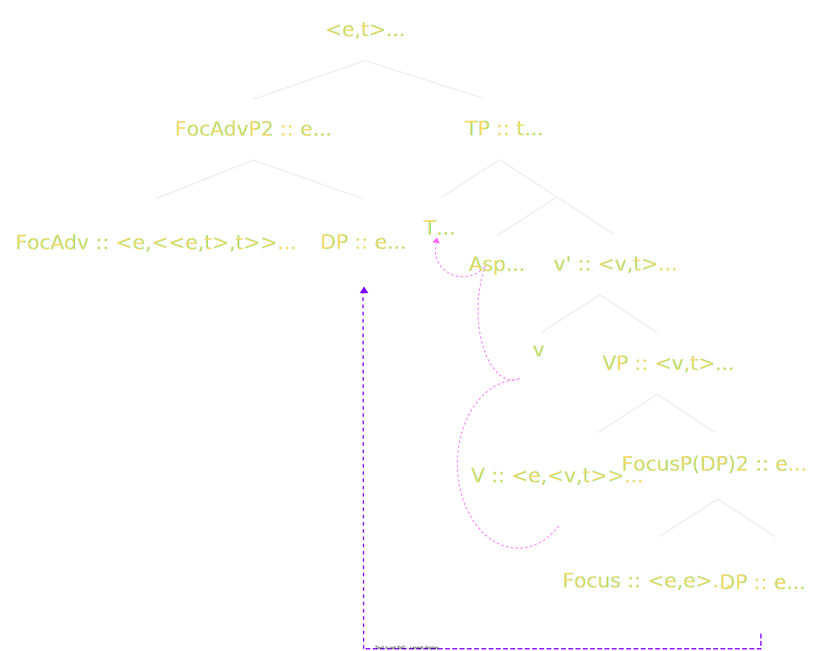f stands for the focus-marked constituent, and Af is the set of contextually available alternatives to the focus-marked constituent.
In the above example, [only] has the denotation
λf. λP. ∀x : (x ∈ Af ∧ x ≠ f). ¬P(x),
but it also contains a presupposition, namely that the f-marked constituent satisfies the predicate. Below is a table containing each focusing adverbs along with presupposition and claim (the presupposition being the part between colon and period):
| Presupposition | Claim | |
|---|---|---|
| [only] (tó) λf. λP: |
P(x). |
∀x : (x ∈ Af ∧ x ≠ f). ¬P(x) |
| [also] (máo) λf. λP: |
∃x : (x ∈ Af ∧ x ≠ f). P(x). |
P(x) |
| [even] (júaq) λf. λP: |
∀x : (x ∈ Af ∧ x ≠ f). P(x) >likely P(f). |
P(x) |
Modals and conditionals
ModalP denotation
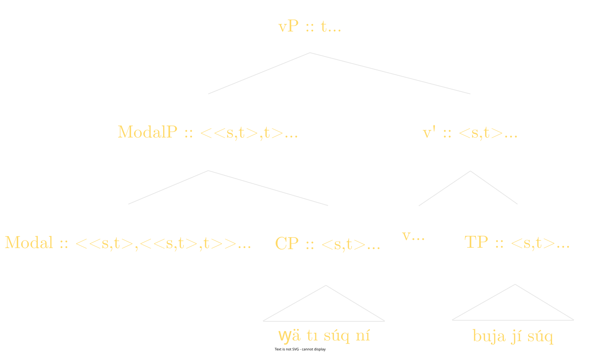Toaq's modals are, in essence, quantifiers over possible worlds. Because of this, we can use the same structure that QPs use:
Q : [restriction]. [scope]
The restriction restricts the possible worlds to those in which the modal complement is true.
The scope specifies what the worlds in that restricted set are like.
The ModalP combines with its sister via Functional Application.
ao is a function which creates the "ao-worlds" of a world w. It returns the set of minimally different worlds supplied by context c in which the complement is true, and it is only defined if the complement is false in w0 (or whatever reference world we're currently in). This last part is what makes ao a "subjunctive" conditional.
The above example arrives at
∀w ∈ ao(w) : ∃e. tıw(súq, ní)(e).
∃e'. bujaw(súq)(e') ∧ agent(e') = jí
"Every ao-world in which you are here
is a world in which I kiss you." (Presupposition: "You are not here")
"If you were here, I would kiss you."
The following table lists the four basic modal denotations:
| Modal | Denotation |
|---|---|
| she | λR.λS. ∀w ∈ shew'(w) : R(w). S(w) |
| daı | λR.λS. ∃w ∈ shew'(w) : R(w). S(w) |
| ao | λR.λS. ∀w ∈ aow'(w) : R(w). S(w) |
| ea | λR.λS. ∃w ∈ aow'(w) : R(w). S(w) |
she-worlds are "indicative", i.e. factual, while ao-worlds are "subjunctive", i.e. counterfactual.
Coordinate structure denotations
The semantic type of a conjunction depends on the type of its conjuncts.
Conjuncts fall into two broad categories:
• argument conjuncts, which include DPs and CPs, and
• verbal and clausal conjuncts, which include everything else
Argument conjuncts always involve the plural coordinator /r+oi róı, which inflects for quantification over the coordinate structure. When the structure is not quantified, the plural coordinator is spelled róı.
When the structure is existentially quantified, it is spelled rá.
When it is universally quantified, it is spelled rú.
Note the parallel vowels:
sá → rá
tú → rú
For example, jí rú súq is a plural-coordinated structure with a universal quantifier over its referents:
jí rú súq → tú mea jí róı súq
In contrast, all other coordination involves the familiar connectives (e.g. ∧ and ∨) and clausal or verbal conjuncts.
DP conjuncts
The basic, uninflected, plural coordinate structure looks as follows:
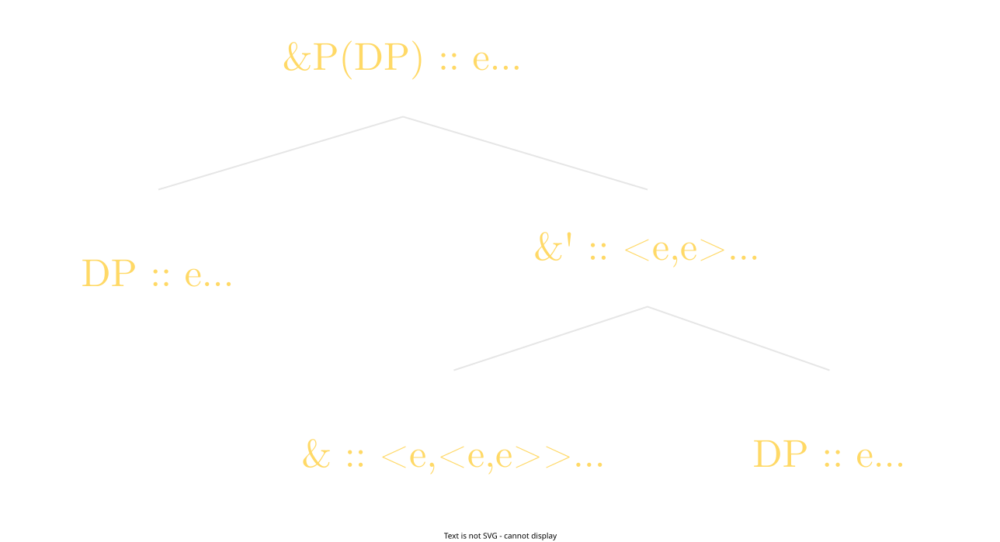róı can be inflected to indicate the presence of a higher QP which quantifies over the referents of the conjuncts:
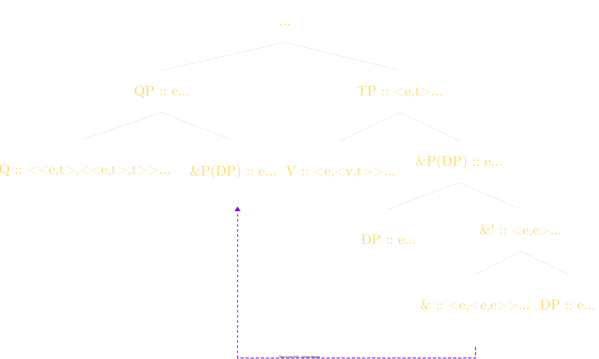In other words, the change from róı to rú has resulted in a change from
∃e. nuo([súq & jí])(e)
= ∃e. e is an event of [the listener & the speaker] being asleep
to
∀x : mea(x, [súq & jí]). ∃e. nuo(x)(e)
= ∀x : x is among [the listener & the speaker]). ∃e. e is an event of x being asleep
I.e., every individual among the referents of the coordinate DP súq róı jí is claimed to satisfy the predicate.
Likewise for rá:
The remaining cases are straightforward:
Adverbial conjuncts
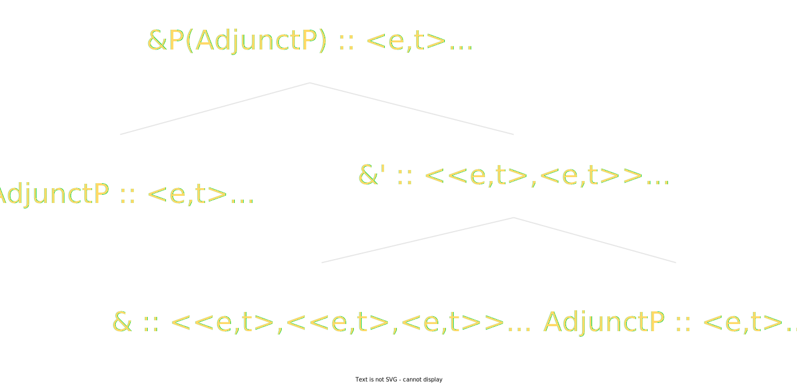Preposition conjuncts
These are identical to full adverbial conjuncts, except that the conjuncts share the same complement:
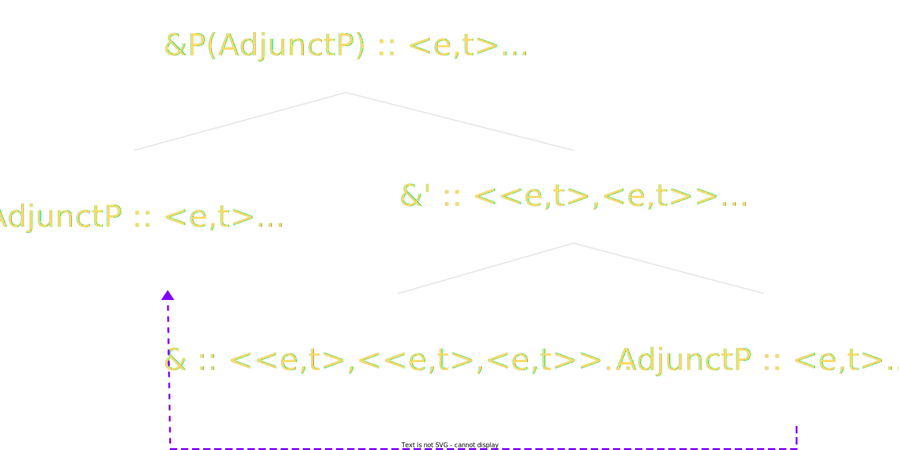
nîe rú gûq tíaıg,c
= λx. x is in the box ∧ x is under the box
Relative clause conjuncts
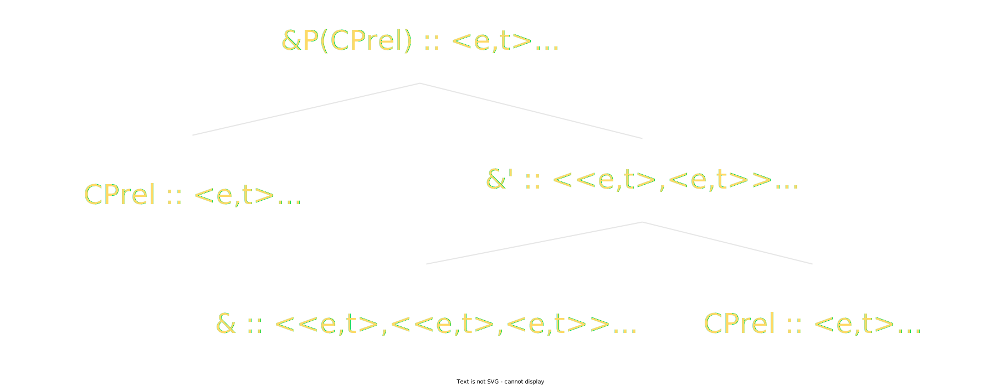
[&P CPrel [&' & CPrel]]g,c
= λx. x likes flowers ∧ x is wearing no clothes
Tense phrase conjuncts

[&P TP [&' & TP]]g,c
= [&P [TP joaı súq báq rua] [&' [& rú] [TP sea jí]]]g,c
= (gen r : rua(r). ∃e. joaı(súq, r)(e)) ∧ (∃e'. sea(jí)(e'))
= (∃e. e an event of looking for flowers and the agent of e is the listener in c) ∧ (∃e'. e' is an event of the speaker in c relaxing)
(tense and aspect omitted)